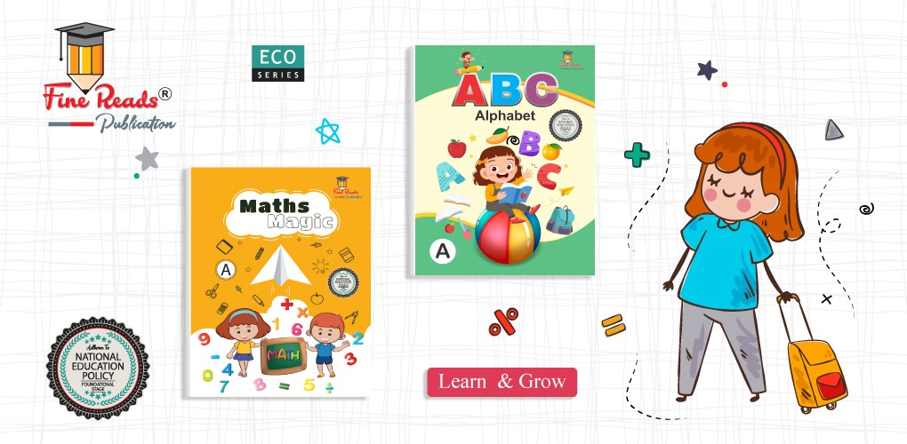

<div id="carouselExampleCaptions" class="relative" data-twe-carousel-init data-twe-ride="carousel">
    <!-- Carousel indicators -->
    <div class="absolute left-0 right-0 lg:bottom-0  z-[2] mx-auto mb-4 flex list-none justify-center p-0" data-twe-carousel-indicators>
        <button type="button" data-twe-target="#carouselExampleCaptions" data-twe-slide-to="0" data-twe-carousel-active class="mx-[3px] box-content h-[3px] w-[30px] flex-initial cursor-pointer border-0 border-y-[10px] border-solid border-transparent bg-gray-900 bg-clip-padding p-0 -indent-[999px] duration-[600ms] ease-[cubic-bezier(0.25,0.1,0.25,1.0)] motion-reduce:transition-none" aria-current="true" aria-label="Slide 1"></button>
        <button type="button" data-twe-target="#carouselExampleCaptions" data-twe-slide-to="1" class="mx-[3px] box-content h-[3px] w-[30px] flex-initial cursor-pointer border-0 border-y-[10px] border-solid border-transparent bg-gray-900 bg-clip-padding p-0 -indent-[999px] duration-[600ms] ease-[cubic-bezier(0.25,0.1,0.25,1.0)] motion-reduce:transition-none" aria-label="Slide 2"></button>
        <button type="button" data-twe-target="#carouselExampleCaptions" data-twe-slide-to="2" class="mx-[3px] box-content h-[3px] w-[30px] flex-initial cursor-pointer border-0 border-y-[10px] border-solid border-transparent bg-gray-900 bg-clip-padding p-0 -indent-[999px] duration-[600ms] ease-[cubic-bezier(0.25,0.1,0.25,1.0)] motion-reduce:transition-none" aria-label="Slide 3"></button>
    </div>

    <!-- Carousel items -->
    <div class="relative w-full overflow-hidden after:clear-both after:block after:content-['']">
        <!-- First item -->
        <div class="relative float-left -mr-[100%] w-full h-64 lg:h-96 transition-transform duration-[600ms] ease-in-out motion-reduce:transition-none" data-twe-carousel-active data-twe-carousel-item style="backface-visibility: hidden">
            
            <!-- content goes here -->
        </div>
        <!-- Second item -->
        <div class="relative float-left -mr-[100%] hidden w-full h-64 lg:h-96 transition-transform duration-[600ms] ease-in-out motion-reduce:transition-none" data-twe-carousel-item style="backface-visibility: hidden">
            
            <!-- some text goes here -->
        </div>
        <!-- Third item -->
        <div class="relative float-left -mr-[100%] hidden w-full h-64 lg:h-96 transition-transform duration-[600ms] ease-in-out motion-reduce:transition-none" data-twe-carousel-item style="backface-visibility: hidden">
            
            <!-- content -->
        </div>
    </div>

    <!-- Carousel controls - prev item -->
    
    <button class="absolute top-[-150px]  bottom-2 lg:bottom-0 lg:left-0 lg:top-0 z-[1] md:flex items-center justify-center border-0 bg-none p-0 text-center text-gray-800 opacity-50 transition-opacity duration-150 ease-[cubic-bezier(0.25,0.1,0.25,1.0)] hover:text-white hover:no-underline hover:opacity-90 hover:outline-none focus:text-white focus:no-underline focus:opacity-90 focus:outline-none motion-reduce:transition-none" type="button" data-twe-target="#carouselExampleCaptions" data-twe-slide="prev">
        <span class="inline-block h-8 w-8">
            <svg xmlns="http://www.w3.org/2000/svg" fill="none" viewBox="0 0 24 24" stroke-width="1.5" stroke="currentColor" class="h-6 w-6">
                <path stroke-linecap="round" stroke-linejoin="round" d="M15.75 19.5L8.25 12l7.5-7.5" />
            </svg>
        </span>
        <span class="!absolute !-m-px !h-px !w-px !overflow-hidden !whitespace-nowrap !border-0 !p-0 ![clip:rect(0,0,0,0)]">Previous</span>
    </button>
    
    <!-- Carousel controls - next item -->
    <button class="absolute top-[-150px] bottom-2 right-0 lg:bottom-0 lg:right-0 lg:top-0 z-[1] md:flex items-center justify-center border-0 bg-none p-0 text-center text-gray-800 opacity-50 transition-opacity duration-150 ease-[cubic-bezier(0.25,0.1,0.25,1.0)] hover:text-white hover:no-underline hover:opacity-90 hover:outline-none focus:text-white focus:no-underline focus:opacity-90 focus:outline-none motion-reduce:transition-none" type="button" data-twe-target="#carouselExampleCaptions" data-twe-slide="next">
        <span class="inline-block h-8 w-8">
            <svg xmlns="http://www.w3.org/2000/svg" fill="none" viewBox="0 0 24 24" stroke-width="1.5" stroke="currentColor" class="h-6 w-6">
                <path stroke-linecap="round" stroke-linejoin="round" d="M8.25 4.5l7.5 7.5-7.5 7.5" />
            </svg>
        </span>
        <span class="!absolute !-m-px !h-px !w-px !overflow-hidden !whitespace-nowrap !border-0 !p-0 ![clip:rect(0,0,0,0)]">Next</span>
    </button>
</div>